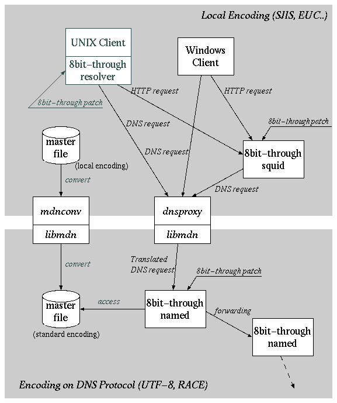
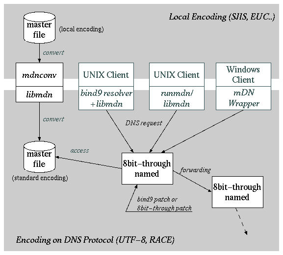

mDNkit 仕様書
mDNkit は次のようなコンポーネントから構成されます。
- dnsproxy
DNS サーバのプロキシサーバとして動作し、クライアントからの DNS
メッセージを DNS サーバに中継し、また DNS サーバから返される
DNS メッセージをクライアントに中継します。
クライアントから送られてきた DNS メッセージを中継する際には、
メッセージ中のドメイン名を、クライアントの使用する
ローカルエンコーディングから、多言語化された DNS サーバの使用する
DNS プロトコル上のエンコーディングに変換するとともに
正規化や ZLD の除去・付加を行います。
また DNS サーバから返された DNS メッセージを中継する際には、
メッセージ中のドメイン名を、DNS プロトコル上のエンコーディングから
ローカルエンコーディングに変換し、同時に ZLD の除去・付加を行います。
- mdnconv
ゾーンマスタファイルや named.conf ファイルのエンコーディング
変換用ツールです。ローカルエンコーディングで記述されたこれらのファイルを、
多言語化された DNS サーバが使用するDNS プロトコル上のエンコーディングに
変換し、同時に正規化も行います。
- BIND-9 パッチ
BIND-9 で多言語ドメイン名を扱えるようにするためのパッチです。
このパッチを適用することにより、BIND-9 のリゾルバに多言語ドメイン名の
エンコーディング変換や正規化の機能が付加されます。これにより
dnsproxy を使用することなく、多言語ドメイン名が扱えるようになります。
また dig 等のツールでも多言語ドメイン名を扱えるようになります。
- runmdn
BIND-4 あるいは BIND-8 ベースのアプリケーションを再コンパイルすることなしに
多言語ドメイン名を扱えるようにするためのコマンドです。
アプリケーションの実行時に MDN ライブラリを動的にリンクすることにより
アプリケーションにリンクされているリゾルバに多言語ドメイン名の
エンコーディング変換や正規化の機能が付加されます。これにより
dnsproxy を使用することなく、多言語ドメイン名が扱えるようになります。
- mDN Wrapper
Windows ベースのアプリケーションで多言語ドメイン名を扱えるようにするための、
WINSOCK に対するWrapper DLL です。
通常、WindowsアプリケーションはWINSOCK によってドメイン名を解決します。
mDN Wrapper は、WINSOCK の呼び出しをフックして、
多言語ドメイン名のエンコーディングの変換や正規化を行ないます。
同じようなことはdnsproxyでもできますが、
mDN Wrapper を使った場合には、
アプリケーション毎に異なったローカルエンコーディングを受付けることもできます。
- MDN ライブラリ
上記のコンポーネントが使用するライブラリです。多言語ドメイン名の変換に
関わる
- エンコーディング変換
- 文字列の正規化
- DNS メッセージの解析と組み立て
- ZLD の削除、追加
という機能を提供します。
- 8ビットスルーパッチ
dnsproxy を用いて多言語ドメイン名のエンコーディング変換や正規化等を
行う場合、DNS サーバやリゾルバライブラリにはこれらの機能は必要ありません。
ただし DNS プロトコル上のエンコーディングとして
UTF-8 等の 8 ビットコードを使用する場合、
従来の DNS サーバは使用することができず、8ビットコードをエラーにせずに
通すような改造が必要です。
またローカルエンコーディングが SJIS 等の 8 ビットコードを使用する場合、
やはりリゾルバライブラリにも 8 ビットコードをそのまま通し、
エラーにしないようにするための改造が必要です。
さらにアプリケーションの中には、独自にドメイン名の検査を行い、
8 ビットコードを通さないものがあります。
このため、本キットでは
- BIND-8 のネームサーバ、リゾルバを 8 ビットスルーにするためのパッチ
- Web のキャッシュサーバである Squid の URL 解析部分を 8 ビットスルー
にするためのパッチ
を提供します。
これらの 8 ビットスルーパッチに関しては特に仕様の記述は行いません。
各コンポーネントがどこでどのように使われるのかを示したのが次の2枚の図です。
1枚目は多言語ドメイン名の処理を dnsproxy を利用して行う場合の構成図です。

2枚目は dnsproxy を使用せず、クライアント側のリゾルバで多言語ドメイン名の
処理を行う場合の構成図です。

図中、イタリック体の部分が本キットに含まれるコンポーネントです。
図の上半分は SJIS など、ローカルエンコーディングが使用される
世界で、下半分が UTF-8 など、多言語化された DNS が使用する
DNS プロトコル上のエンコーディングが使用される世界です。
本キットが提供するコンポーネントはこれらの世界をつなぐためのものです。